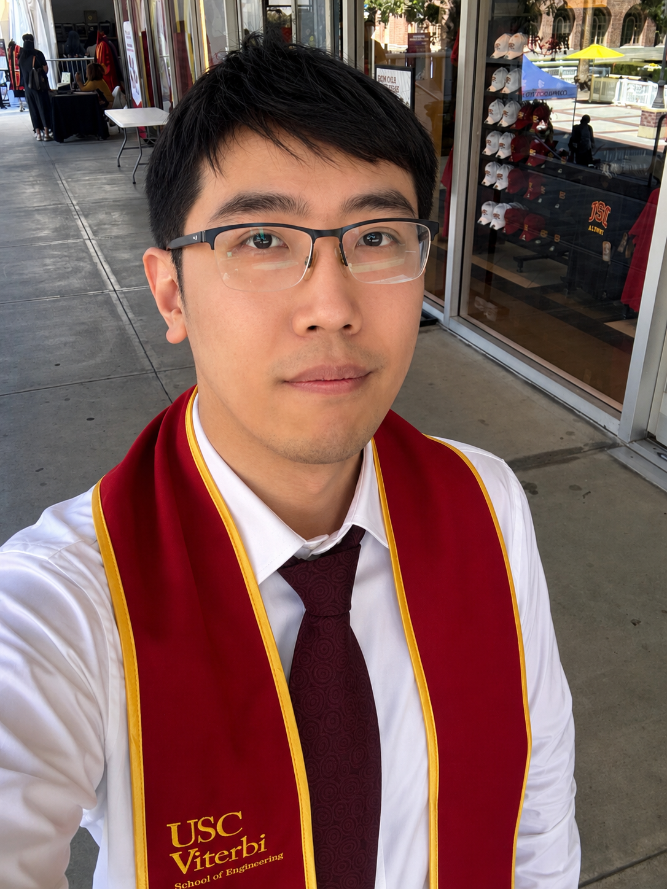

Branch Landing
Section-aware fine-grained forward-edge CFI for RISC-V. The project combines BLD/BRL ISA extensions, compiler instrumentation, landing-site validation, and Bloom-filter source authorization.
RISC-V · LLVM · SecurityPh.D. in Computer Engineering, USC · Beijing
I recently completed my Ph.D. in Computer Engineering at the University of Southern California. I work across computer architecture, compiler/runtime systems, RISC-V security, and hardware/software co-design.
Currently exploring startup and technical leadership opportunities in Beijing around AI infrastructure, low-latency inference, chips, compilers, systems, and security.

I received my Ph.D. from USC under the supervision of Prof. Xuehai Qian, now a Tenured Full Professor at Tsinghua University. I was a recipient of the USC Viterbi School Annenberg Fellowship.
Section-aware fine-grained forward-edge CFI for RISC-V. The project combines BLD/BRL ISA extensions, compiler instrumentation, landing-site validation, and Bloom-filter source authorization.
RISC-V · LLVM · SecurityA coherence-level security mechanism that mitigates transient execution attacks through undo, merge, and purge operations while supporting speculative execution.
Architecture · Coherence · TDSCFPGA and accelerator-oriented work on binarized neural networks, connecting microelectronics training with efficient neural computation.
Accelerators · FPGA · VLSIPh.D. Researcher
University of Southern California
Research Intern
Alibaba Group U.S. / Alibaba DAMO Academy
Ph.D., Computer Engineering
University of Southern California, 2026
M.S., Computer Science
University of Southern California, 2020
B.E., Microelectronic Science and Engineering
Tsinghua University, 2017
Open to conversations with founders, investors, researchers, and engineering teams working on AI infrastructure, chips, compilers, systems, and security.
superyou1994@gmail.com